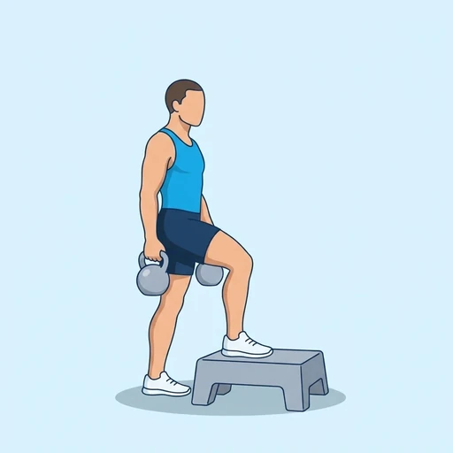
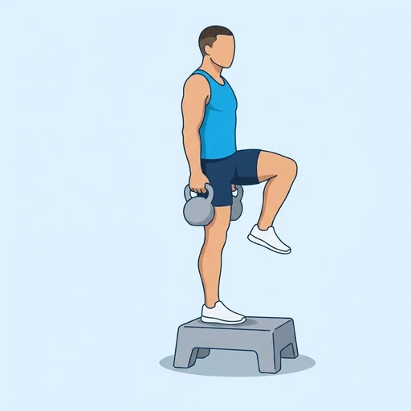

Kettlebell Step-Up to Balance
A loaded version of the step-up to balance: holding a kettlebell in each hand, you step onto a low platform, drive the free knee up in front of you and stand tall on the working leg before stepping back down. The quadriceps and glutes lift the body and the weights while the hips and ankle keep you steady.
Upper legs · Kettlebell · Intermediate


Muscles worked by the Kettlebell Step-Up to Balance
Primary
Secondary
Also called: glute, glutes, gluteus maximus, buttocks, butt, quad.
Equipment
Also called: kb, cast iron kettlebell, competition kettlebell, girya.
How to do the Kettlebell Step-Up to Balance
- Stand facing a low, stable step or bench with a kettlebell in each hand, arms hanging at your sides.
- Place one foot flat on top of the step.
- Press through the whole of the front foot and straighten that leg to lift your body onto the step.
- As you rise, drive the other knee up in front of you until the thigh is about hip height.
- Stand tall on the working leg and hold the knee-up position for a moment without leaning back.
- Lower the free foot back to the floor under control, then step the working leg down as well and repeat; switch legs after the planned repetitions.
Form tips
- Keep the weights hanging at your sides and still; swinging them or pulling them up with your arms takes the work away from the legs.
- Keep your trunk upright and your hips level during the balance hold rather than tilting toward the lifted knee.
- Start with light weights and a low step; add load only when you can hold the balance position without wobbling.
At a glance
| Body part | Upper legs |
|---|---|
| Category | Strength |
| Force type | Push |
| Mechanic | Compound |
| Difficulty | Intermediate |
| Equipment | Kettlebell |
| Goals | Strength, Hypertrophy |
| Tags | Shoulder safe, Lower back safe, No axial load, Knee safe, Requires bench, Core |
| MET | 6.0 (metabolic equivalent, for calorie estimates) |
| Unilateral | Yes |
| Bodyweight | No |
| Dataset id | kb-step-up-to-balance |
Kettlebell Step-Up to Balance in German & Spanish
| German | Kettlebell-Step-Up mit Balance-Halt |
|---|---|
| Spanish | Step-Up con Equilibrio y Pesas Rusas |
Descriptions, instructions and tips ship in all three languages in the JSON.
Related exercises
Exercise data (JSON)
The record below is exactly what exercises.json ships for this exercise — names, descriptions, instructions and tips in English, German and Spanish.
{
"id": "kb-step-up-to-balance",
"name_en": "Kettlebell Step-Up to Balance",
"name_de": "Kettlebell-Step-Up mit Balance-Halt",
"name_es": "Step-Up con Equilibrio y Pesas Rusas",
"description_en": "A loaded version of the step-up to balance: holding a kettlebell in each hand, you step onto a low platform, drive the free knee up in front of you and stand tall on the working leg before stepping back down. The quadriceps and glutes lift the body and the weights while the hips and ankle keep you steady.",
"description_de": "Eine beschwerte Variante des Step-Ups mit Balance-Halt: Mit einer Kettlebell in jeder Hand steigst du auf eine niedrige Erhöhung, ziehst das freie Knie vor dir nach oben und stehst aufrecht auf dem Arbeitsbein, bevor du wieder hinuntertrittst. Quadrizeps und Gesäßmuskeln heben den Körper und die Gewichte, während Hüfte und Sprunggelenk dich im Gleichgewicht halten.",
"description_es": "Una versión con carga del step-up con equilibrio: sujetando una pesa rusa en cada mano, subes a una plataforma baja, llevas la rodilla libre hacia arriba delante de ti y te quedas erguido sobre la pierna de trabajo antes de volver a bajar. Los cuádriceps y los glúteos elevan el cuerpo y las pesas mientras las caderas y el tobillo te mantienen estable.",
"category": "strength",
"force_type": "push",
"mechanic": "compound",
"difficulty": "intermediate",
"equipment": "kettlebell",
"body_part": "upper_legs",
"primary_muscles": [
"gluteus_maximus",
"quadriceps"
],
"secondary_muscles": [
"forearm_flexors",
"gastrocnemius",
"gluteus_medius",
"hip_flexors"
],
"goals": [
"strength",
"hypertrophy"
],
"tags": [
"shoulder_safe",
"lower_back_safe",
"no_axial_load",
"knee_safe",
"requires_bench",
"core"
],
"variation_group": "step-up",
"is_unilateral": true,
"is_bodyweight": false,
"instructions_en": [
"Stand facing a low, stable step or bench with a kettlebell in each hand, arms hanging at your sides.",
"Place one foot flat on top of the step.",
"Press through the whole of the front foot and straighten that leg to lift your body onto the step.",
"As you rise, drive the other knee up in front of you until the thigh is about hip height.",
"Stand tall on the working leg and hold the knee-up position for a moment without leaning back.",
"Lower the free foot back to the floor under control, then step the working leg down as well and repeat; switch legs after the planned repetitions."
],
"instructions_de": [
"Stelle dich vor eine niedrige, stabile Stufe oder Bank, einer Kettlebell in jeder Hand, die Arme seitlich hängend.",
"Setze einen Fuß flach auf die Stufe.",
"Drücke dich über den ganzen vorderen Fuß ab und strecke das Bein, um den Körper auf die Stufe zu heben.",
"Ziehe beim Aufrichten das andere Knie vor dir nach oben, bis der Oberschenkel etwa auf Hüfthöhe ist.",
"Stehe aufrecht auf dem Arbeitsbein und halte die Knie-oben-Position einen Moment, ohne dich zurückzulehnen.",
"Senke den freien Fuß kontrolliert zurück auf den Boden, stelle dann auch das Arbeitsbein hinunter und wiederhole; wechsle nach den geplanten Wiederholungen das Bein."
],
"instructions_es": [
"Ponte de frente a un escalón o banco bajo y estable con una pesa rusa en cada mano y los brazos colgando a los costados.",
"Apoya un pie completamente sobre el escalón.",
"Empuja con todo el pie delantero y estira esa pierna para subir el cuerpo al escalón.",
"Mientras subes, lleva la otra rodilla hacia arriba delante de ti hasta que el muslo quede aproximadamente a la altura de la cadera.",
"Mantente erguido sobre la pierna de trabajo y sostén la posición con la rodilla arriba un momento sin inclinarte hacia atrás.",
"Baja el pie libre de nuevo al suelo con control y luego baja también la pierna de trabajo y repite; cambia de pierna tras las repeticiones previstas."
],
"tips_en": [
"Keep the weights hanging at your sides and still; swinging them or pulling them up with your arms takes the work away from the legs.",
"Keep your trunk upright and your hips level during the balance hold rather than tilting toward the lifted knee.",
"Start with light weights and a low step; add load only when you can hold the balance position without wobbling."
],
"tips_de": [
"Lass die Gewichte ruhig seitlich hängen; wenn du sie schwingst oder mit den Armen hochziehst, nimmst du die Arbeit von den Beinen.",
"Halte den Oberkörper aufrecht und die Hüfte während des Balance-Halts waagerecht, statt zum angehobenen Knie zu kippen.",
"Beginne mit leichten Gewichten und einer niedrigen Stufe; erhöhe die Last erst, wenn du die Balance-Position ohne Wackeln halten kannst."
],
"tips_es": [
"Mantén las pesas quietas colgando a los costados; balancearlas o subirlas con los brazos le quita trabajo a las piernas.",
"Mantén el tronco erguido y las caderas niveladas durante la pausa en equilibrio, sin inclinarte hacia la rodilla elevada.",
"Empieza con pesas ligeras y un escalón bajo; añade carga solo cuando puedas sostener la posición de equilibrio sin tambalearte."
],
"met": 6.0,
"images": {
"flat": {
"start": "images/flat/kb-step-up-to-balance-start.webp",
"peak": "images/flat/kb-step-up-to-balance-peak.webp"
}
}
}Fetch just this exercise
const { exercises } = await fetch(
"https://exercise-dataset.com/exercises.json"
).then(r => r.json());
const ex = exercises.find(e => e.id === "kb-step-up-to-balance");Free for personal and commercial in-app use with attribution (“Exercise data by RepDB”) — see the license and ready-made attribution snippets. Redistributing the data as a dataset or API is not permitted.